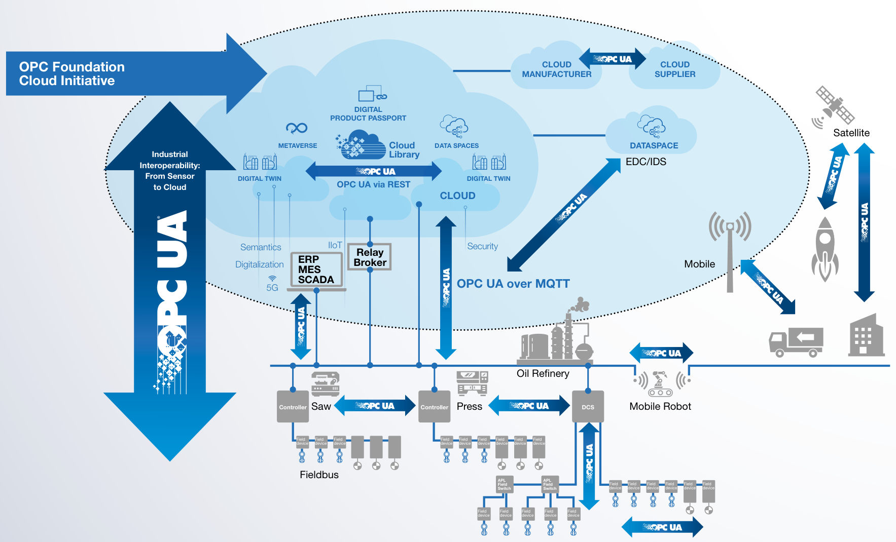
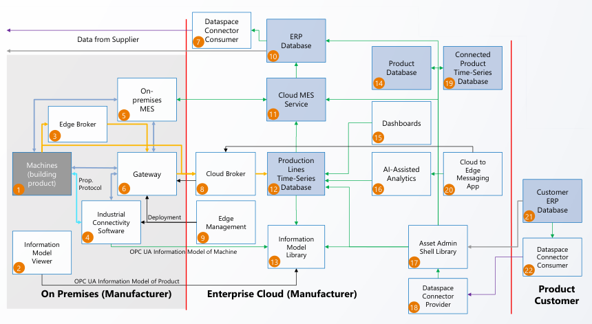
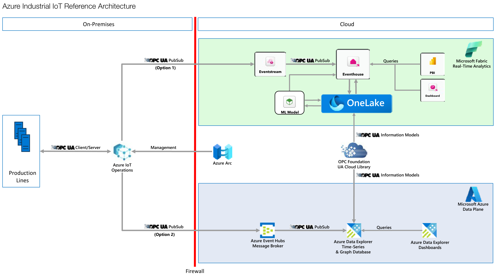
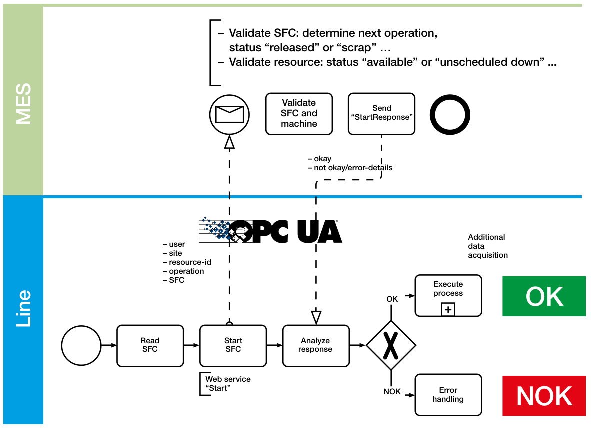

Cloud Integration
OPC UA ไม่ได้หยุดอยู่ในโรงงาน — เป็น "Industrial Cloud Interoperability Standard" — Microsoft, Google, AWS, SAP สนับสนุนเป็นทางการ ใช้กันแล้วในโรงงานจริงตั้งแต่ปี 2015 บทนี้พาดูสถาปัตยกรรมที่ Reference Architecture ของ Cloud แต่ละค่ายแนะนำให้ใช้
OPC Foundation Cloud Initiative
ตั้งแต่ปี 2018 ที่มี OPC UA PubSub (Part 14) — Cloud Provider เริ่มหันมาใช้ OPC UA เป็นมาตรฐานหลัก ในการรับข้อมูลจากโรงงาน OPC Foundation จึงเปิด Cloud Initiative เพื่อ:
- ทำให้ OPC UA เข้ากับ Cloud Application ได้ดีขึ้น
- สร้าง Reference Architecture ที่ใช้งานได้จริง
- รักษา Information Models ใน Cloud (ผ่าน UA Cloud Library)
- เปิดมาตรฐานใหม่ OPC UA Cloud eXchange (UACX)

End User Council — ใครเป็นคนใช้จริง
Cloud Initiative มี End User Council ของผู้ผลิตชั้นนำ:
+ Cloud Providers: AWS, Google Cloud, Microsoft, Huawei, SAP
Reference Architecture (Generic)
Cloud Initiative แนะนำ Reference Architecture ที่ใช้ได้กับ Cloud ทุกค่าย — มี 22 องค์ประกอบ ตั้งแต่ Edge ถึง Customer:

Flow ของข้อมูล
- Machines (1) — PLC/Sensor บนสายการผลิต เป็น OPC UA Server
- Information Model Viewer (2) — Engineer Browse เห็น Address Space
- Edge Broker (3) — MQTT Broker ภายในโรงงาน รวบรวมข้อมูล
- Industrial Connectivity Software (4) — Aggregator + Gateway (เช่น Kepware)
- On-premises MES (5) — ใช้ข้อมูล Real-time
- Gateway (6) — ส่งข้อมูลขึ้น Cloud ผ่าน MQTT
- Cloud Broker (8) — MQTT Broker บน Cloud (Azure IoT Hub, AWS IoT Core, …)
- Time-Series DB (12) — เก็บประวัติ (Azure Data Explorer, Timescale, InfluxDB)
- Cloud MES (11), ERP (10), Dashboards (15), AI Analytics (16)
- Dataspace Connectors (7, 18, 22) — แลกเปลี่ยนข้อมูลกับ Supplier/Customer (ตามมาตรฐาน IDSA)
Azure Industrial IoT Reference Architecture
Microsoft Azure มี Reference Architecture ของตัวเองที่ใช้ OPC UA เป็นแกนหลัก:

คำสำคัญในระบบ Azure
| Component | คืออะไร |
|---|---|
| Azure IoT Operations | Edge Runtime ที่ทำหน้าที่เป็น OPC UA Client + MQTT Broker |
| Azure Event Hubs | Cloud MQTT/Kafka Broker — รับข้อมูลจาก Edge |
| Eventhouse | Microsoft Fabric — Time-series Database สำหรับ Industrial Data |
| OneLake | Data Lake แบบ Open Format — เก็บข้อมูลปริมาณมาก |
| Real-Time Analytics + PBI | Dashboard + Streaming Analytics |
SAP MES Integration — Vertical Integration จริง
SAP เป็นระบบ ERP/MES ที่ใหญ่ที่สุดในโลก ใช้ในโรงงานเกือบทุกที่ — ตอนนี้รองรับ OPC UA โดยตรง:

Pattern นี้ทำงานได้เพราะ PLC ใช้ OPC UA Server และ SAP เป็น OPC UA Client ส่งคำสั่งระดับ Production Order ลงไปที่เครื่องโดยตรง — ไม่ต้องมี Middleware ที่ Custom สำหรับแต่ละโรงงานแล้ว
UA Cloud Library — Information Models ใน Cloud
Cloud Initiative ดูแล UA Cloud Library — Repository ของ Information Models ที่เปิดให้ใครก็เข้าถึงได้:
- Browse Models ผ่าน Web UI
- โหลด UaNodeSet XML
- REST API สำหรับโหลดอัตโนมัติ
- Persist Instances ใน Database — ทำให้ Cloud Application อ้างอิงได้
ที่ uacloudlibrary.opcfoundation.org — ใครก็ Upload Model ของตัวเองได้ (Equinor Open-source Asset Templates ของตัวเองไว้ที่นี่)
Real Cases — โรงงานที่ใช้จริง
Equinor + Microsoft Azure
- โรงกลั่นน้ำมัน Johan Sverdrup — มี 19 OPC UA Servers รวมเข้า Central Gateway
- ส่ง 1 ล้าน tags ขึ้น Azure
- Asset Templates: 50 Objects, 90+ Classes, 920+ Attributes
- Asset Structure: 31,000 ชิ้น
- Open-source Templates บน GitHub และ UA Cloud Library
Renault + Google Cloud
- โรงงานรถยนต์ 38 แห่งทั่วโลก
- 7,000+ OPC UA Devices ลงที่ 24 โรงงาน
- 30,000 messages/second → Google Cloud
- ทำให้เครื่อง Mitsubishi, ABB, KUKA, Siemens ในสายเดียวกันส่งข้อมูลในรูปแบบเดียวกัน
Bühler (Swiss machinery)
- โรงงานข้าวสาลี — 65% ของข้าวสาลีในโลกผ่านเครื่อง Bühler
- 90% ของเครื่องใหม่ ใช้ OPC UA
- Mill E3 — มี 15,000+ data points ในโรงงานเดียว
- เชื่อมต่อ "Bühler Insights" บน Microsoft Azure
P&G (consumer goods)
- 450 โรงงานทั่วโลก — 100,000 พนักงาน
- Smart Manufacturing แบบ Integrated Work System (IWS)
- OPC UA + OPC UA FX + TSN เป็น Backbone
- เป้าหมาย: ลด Operating Cost 5-10%, Maintenance Cost 50%
Industrial Metaverse + Digital Twin
Trend ใหม่ปี 2024-2026 — Industrial Metaverse — "Digital Twin" ของโรงงานที่อัพเดทแบบ Real-time ใน 3D — ใช้สำหรับ:
- Operator Training — สอนพนักงานใหม่ในสภาพแวดล้อม Virtual
- Process Optimization — ทดลองเปลี่ยนสายการผลิตใน Digital ก่อนทำจริง
- Remote Maintenance — Engineer ที่ HQ เห็นโรงงานเหมือนยืนอยู่ที่นั่น
- AI Inspection — โมเดล ML วิเคราะห์ภาพ + ข้อมูล Real-time พร้อมกัน
OPC UA เป็น ภาษากลาง ที่ป้อนข้อมูลให้ Digital Twin — ทุก Sensor/Actuator ใน Physical พูดผ่าน OPC UA → Digital Twin อัพเดท → AI/ML วิเคราะห์ → ส่งคำสั่งกลับลง OPC UA Server
Data Spaces — แลกข้อมูลข้ามบริษัท
ในยุโรปมี Initiative ใหญ่ชื่อ Catena-X — Data Space ของอุตสาหกรรมรถยนต์ ที่ Renault, VW, BMW, Mercedes-Benz, Bosch, Continental แลกข้อมูลกันได้ โดยรักษาความเป็นเจ้าของข้อมูล
OPC UA + IDSA (International Data Spaces Association) = มาตรฐาน Data Spaces ระดับโลก
- Digital Product Passport (DPP) — เอกสารดิจิทัลของผลิตภัณฑ์ที่ติดตามได้ตลอด Life Cycle
- Cross-company Traceability — รู้ที่มาของทุกชิ้นส่วน
- Sustainability Reporting — Carbon Footprint ที่ตามได้
OPC UA เป็น Backend Standard ที่ทำให้สิ่งเหล่านี้เป็นไปได้
สรุปบทที่ 09
- OPC Foundation Cloud Initiative ตั้งเป้าทำให้ OPC UA เป็นมาตรฐาน Cloud Interoperability
- Reference Architecture ใช้ OPC UA over MQTT เชื่อม Edge → Cloud
- Microsoft, AWS, Google Cloud, SAP, Huawei — ทั้งหมดอยู่ใน Steering Committee
- โรงงานชั้นนำใช้จริง: Equinor (Azure), Renault (Google Cloud), Bühler (Azure), P&G
- SAP S/4HANA ใช้ OPC UA Client คุยกับ Production Line โดยตรง
- UA Cloud Library — Repository ของ Information Models — REST API, ฟรี
- เปิดทาง Industrial Metaverse, Digital Twin, Data Spaces (Catena-X), Digital Product Passport
จบส่วนทฤษฎีแล้ว — บทต่อไปเป็น Hands-on! ลองให้ Client ตัวจริง (UaExpert) คุยกับ Server จำลอง (Prosys Simulation) เพื่อดูทุกอย่างที่เรียนมาเป็นของจริง